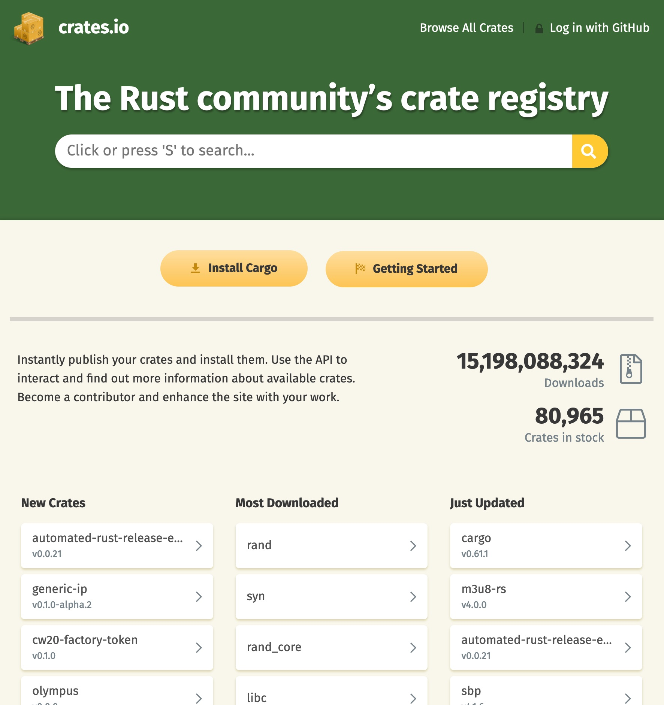

Who's this guy?

Sylvain Wallez - @bluxte
Principal engineer - Elastic
Previously tech lead, CTO, architect, trainer, developer...
...at OVH, Actoboard, Sigfox, Scoop.it, Joost, Anyware
Member of the Apache Software Foundation since 2003

We're hiring!
On the menu
- Where does Rust come from?
- Basics: functions, structures, methods
- Controlled mutability
- Ad hoc polymorphism with traits
- Memory management
- Controlled concurrency
Rust
"Empowering everyone to build reliable and efficient software"
- Performance: blazingly fast and memory efficient.
- Reliability: rich type system & ownership model guarantee memory safety & thread safety.
- Productivity: great documentation, friendly compiler, awesome tooling.
Rust
"Empowering everyone to build reliable and efficient software"
- Performance: blazingly fast and memory efficient.
- Reliability: rich type system & ownership model guarantee memory safety & thread safety.
- Productivity: great documentation, friendly compiler, awesome tooling.

Learning Rust


Online at https://www.rust-lang.org/
Rust
-
Started in 2006 at Mozilla, first announced in 2010
- Primary goals: a fast and secure language
- Parts of Firefox are written in Rust
-
First stable release in 2015
- New releases every 6 weeks, “edition 2021” released in Oct '21
-
Who uses it?
- AWS: Firecracker powers Lambda and Fargate
- Google: parts of the Fuschia operating system
- Linux: 2nd official language for the Kernel!
- CloudFlare: quic / http 3 implementation
- Dropbox: file storage
- Clever Cloud: reverse proxy
- Atlassian, Canonical, Coursera, Chef, Deliveroo, NPM, Sentry…
- Growing ecosystem for embedded development
The Rust ecosystem

crates.io – there’s a crate for that!
Twitter: @rustlang, @ThisWeekInRust
https://users.rust-lang.org
https://exercism.io/
http://www.arewewebyet.org/
http://arewegameyet.com/
https://areweideyet.com/
http://www.arewelearningyet.com/
https://docs.rust-embedded.org/
Getting started: rustup & cargo
Rustup: the Rust toolchain manager
Manage versions, target OS and architectures
curl https://sh.rustup.rs -sSf | sh or download from https://rustup.rs/
rustup doc --std -- browse the docs locally!
Cargo: the Rust build system
cargo new --bin rust_intro
cargo run
.
├── Cargo.toml
└── src
└── main.rs
Hello, Rust!
Cargo.toml
[package]
name = "rust_intro"
version = "0.1.0"
authors = ["Sylvain Wallez <sylvain@bluxte.net>"]
edition = "2018"
[dependencies]
main.rs
fn main() { println!("Hello, world!"); }
Variables & type inference
fn main() { let answer = 42; println!("Hello {}", answer); assert_eq!(answer,42); }
Control structures
fn main() { for i in 0..5 { if i % 2 == 0 { println!("{} is even", i); } else { println!("{} is odd", i); } } }
If as an expression
fn main() { for i in 0..5 { let even_odd = if i % 2 == 0 {"even"} else {"odd"}; println!("{} is {}", i, even_odd); } }
Function declaration
Parameters and return types must be explicit
fn is_even(i: i32) -> bool { i % 2 == 0 } fn main() { for i in 0..5 { let even_odd = if is_even(i) {"even"} else {"odd"}; println!("{} is {}", i, even_odd); } }
Immutability by default
fn main() { let mut sum = 0; for i in 0..5 { sum += i; } println!("sum is {}", sum); }
Functional iteration
fn is_even(i: i32) -> bool { i % 2 == 0 } fn main() { let sum: i32 = (0..5) // this is an iterator .filter(|i| is_even(*i)) // filter with a closure .sum(); // consume the iterator println!("sum of even numbers is {}", sum); }
Passing values by reference
fn is_even(i: &i32) -> bool { i % 2 == 0 } fn main() { let sum: i32 = (0..5) // this is an iterator .filter(|i| is_even(i)) // filter with a closure .sum(); // consume the iterator println!("sum of even numbers is {}", sum); }
Mutable function parameters
fn modifies(x: &mut f64) { *x = 1.0; } fn main() { let mut result = 0.0; modifies(&mut result); println!("result is {}", result); }
Vectors
fn main() { let mut v = Vec::new(); v.push(10); v.push(20); v.push(30); let first = v[0]; // will panic if out-of-range let maybe_first = v.get(0); // returns an Option println!("v is {:?}", v); println!("first is {}", first); println!("maybe_first is {:?}", maybe_first); }
Some, None? The Option enum
#![allow(unused)] fn main() { pub enum Option<T> { None, Some(T), } }
Pattern matching
fn main() { let v = vec![10, 20, 30]; // initialization macro let idx = 0; match v.get(idx) { Some(value) => println!("Value is {}", value), None => println!("No value..."), } }
Destructuring assigment
fn main() { let v = vec![10, 20, 30]; let idx = 0; if let Some(value) = v.get(idx) { println!("Value is {}", value); } }
More pattern matching
fn main() { let n = 0; let text = match n { 0 => "zero", 1 => "one", 2 => "two", _ => "many", }; println!("{} is {}", n, text); }
Tuples
fn add_mul(x: f64, y: f64) -> (f64, f64) { (x + y, x * y) } fn main() { let t = add_mul(2.0, 10.0); println!("tuple is {:?}", t); println!("add {} mul {}", t.0, t.1); let (add, mul) = t; println!("add {} mul {}", add, mul); }
Structs
struct Person { first_name: String, last_name: String } fn main() { let p = Person { first_name: "John".to_string(), last_name: "Smith".to_string() }; println!("This is {} {}", p.first_name, p.last_name); }
Struct implementation
struct Person { first_name: String, last_name: String } impl Person { fn new(first: &str, name: &str) -> Person { Person { first_name: first.to_string(), last_name: name.to_string() } } } fn main() { let p = Person::new("John","Smith"); println!("This is {} {}", p.first_name,p.last_name); }
(String are objects, &str are references to char arrays)
Struct methods
struct Person { first_name: String, last_name: String } impl Person { fn new(first: &str, name: &str) -> Person { Person { first_name: first.to_string(), last_name: name.to_string() } } fn full_name(&self) -> String { format!("{} {}", self.first_name, self.last_name) } } fn main() { let p = Person::new("John","Smith"); println!("This is {}", p.full_name()); }
Variations on self
#[derive(Debug)] struct Person { first_name: String, last_name: String } impl Person { fn new(first: &str, name: &str) -> Person { Person { first_name: first.to_string(), last_name: name.to_string() } } fn full_name(&self) -> String { format!("{} {}",self.first_name, self.last_name) } fn set_first_name(&mut self, name: &str) { self.first_name = name.to_string(); } fn to_tuple(self) -> (String, String) { (self.first_name, self.last_name) } } fn main() { let mut p = Person::new("John","Smith"); println!("{:?}", p); p.set_first_name("Jane"); println!("{:?}", p); println!("{:?}", p.to_tuple()); // p has now moved, below will fail to compile // println!("{:?}", p); }
Struct implementations: wrapping up
-
no
selfargument: associated functions, like thenew"constructor" -
&selfargument: can use the values of the struct, but not change them -
&mut selfargument: can modify the values -
selfargument: will consume the value, which will move
There can be only one owner
#[derive(Debug)] struct Person { name: String } impl Person { fn new(name: &str) -> Person { Person { name: name.to_string() } } } fn take_ownership(p: Person) { println!("{} is mine", p.name); } fn borrow_it(p: &Person) { println!("I'm giving {} back to you!", p.name); } fn main() { let p = Person::new("John"); println!("{:?}", p); // let x = p; // moving p will break the code below // println!("{:?}", x); borrow_it(&p); println!("{:?}", p); take_ownership(p); // println!("{:?}", p); // will fail }
Extending existing types
trait Show { fn show(&self) -> String; } impl Show for i32 { fn show(&self) -> String { format!("a four-byte signed {}", self) } } impl Show for f64 { fn show(&self) -> String { format!("an eight-byte float {}", self) } } fn main() { let answer = 42; let pi = 3.14; println!("Here is {}", answer.show()); println!("Here is {}", pi.show()); }
Sweet, we've added new methods to i32 and f64!
Adding type constraints
trait Show { fn show(&self) -> String; } impl Show for i32 { fn show(&self) -> String { format!("a four-byte signed {}", self) } } impl<T> Show for Option<T> where T: Show { fn show(&self) -> String { match self { Some(v) => v.show(), None => format!("nothing"), } } } fn main() { let answer = Some(42); let void: Option<i32> = None; println!("Here is {}", answer.show()); println!("Here is {}", void.show()); }
Box: dynamic allocation
#[derive(Debug)] struct Node { value: String, left: Option<Box<Node>>, right: Option<Box<Node>>, } impl Node { fn new(s: &str) -> Node { Node{value: s.to_string(), left: None, right: None} } fn set_left(&mut self, node: Node) { self.left = Some(Box::new(node)); } fn set_right(&mut self, node: Node) { self.right = Some(Box::new(node)); } } fn main() { let mut root = Node::new("root"); root.set_left(Node::new("left")); root.set_right(Node::new("right")); println!("{:#?}", root); }
Automatic memory reclamation
Box::new(node) allocates on the heap and node is moved inside the box. Ownership of the box can move, but you
can only get a reference to its content.
The memory is automatically freed when the box has no more owner (it is "dropped").
struct DropTracer(i32); impl Drop for DropTracer { fn drop(&mut self) { println!("Dropping {}", self.0); } } fn main() { let a = DropTracer(0); println!("a contains {}", a.0); let mut b = Box::new(DropTracer(1)); println!("b contains {}", b.0); println!("Replacing b"); b = Box::new(DropTracer(2)); println!("b contains {}", b.0); println!("Exiting"); }
A generic sorted tree
#[derive(Debug)] struct Node<T> { value: T, left: Option<Box<Node<T>>>, right: Option<Box<Node<T>>>, } impl<T: Ord> Node<T> { fn new(v: T) -> Node<T> { Node{value: v, left: None, right: None} } fn set_left(&mut self, node: Node<T>) { self.left = Some(Box::new(node)); } fn set_right(&mut self, node: Node<T>) { self.right = Some(Box::new(node)); } fn insert(&mut self, data: T) { if data < self.value { // <-- Ord is used here match self.left { Some(ref mut n) => n.insert(data), None => self.set_left(Self::new(data)), } } else { match self.right { Some(ref mut n) => n.insert(data), None => self.set_right(Self::new(data)), } } } } fn main() { let mut root = Node::new("root".to_string()); root.insert("one".to_string()); root.insert("two".to_string()); root.insert("four".to_string()); println!("{:#?}", root); }
Reference counters
use std::rc::Rc; fn main() { let s = "hello dolly".to_string(); let rs1 = Rc::new(s); // s moves to heap; ref count 1 println!("{}", Rc::strong_count(&rs1)); let rs2 = rs1.clone(); // ref count 2 println!("{}", Rc::strong_count(&rs1)); let rs3 = Rc::downgrade(&rs1); // weak reference, doesn't inc count println!("{:?}, {:?}, {:?}", rs1, rs2, rs3.upgrade()); println!("Dropping strong references"); drop(rs1); drop(rs2); println!("{:?}", rs3.upgrade()); }
There's a lot more to talk about...
- error handling
- multithreading and the
SyncandSendtraits MutexandRwLockfrom the standard library- async programming
- interior mutability
- etc...
Compared to other languages, Rust is simple but has non conventional features that are its strength.
If you want to use it, take the time to learn it. Ferris will thank you :-)
Thanks!
Presentation contents inspired by https://stevedonovan.github.io/rust-gentle-intro/
Sources available at https://github.com/swallez/introduction-to-rust/